The Square Falcon is the re-imagination of a Star Wars "Millennium Falcon" I built as a child after having seen the original trilogy for the first time.
The original was built on a 16x16 green base plate. Two wings pointed forward, it had a cockpit on the side and you could open the front and roof lid. Since I did not have many bricks and valued form over consistent color, the model also utilized all colors Lego offered at that time. 😉
Instructions (includes part list)
 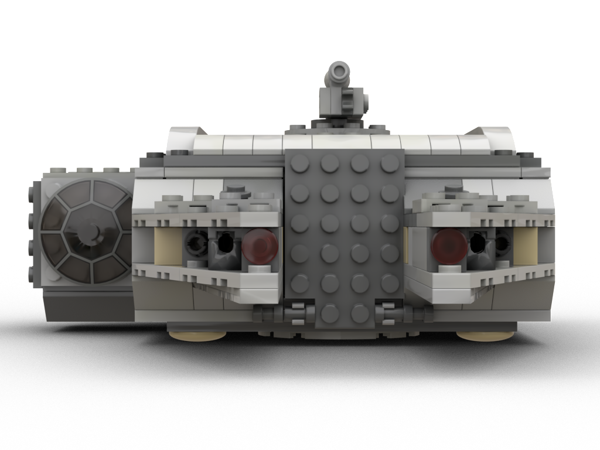
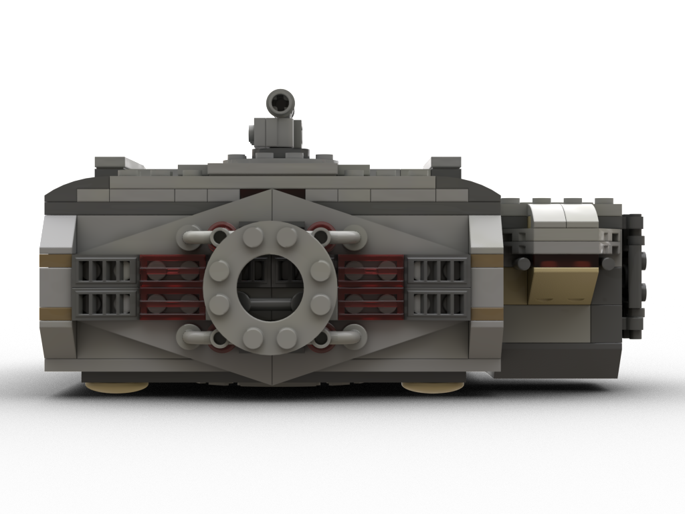
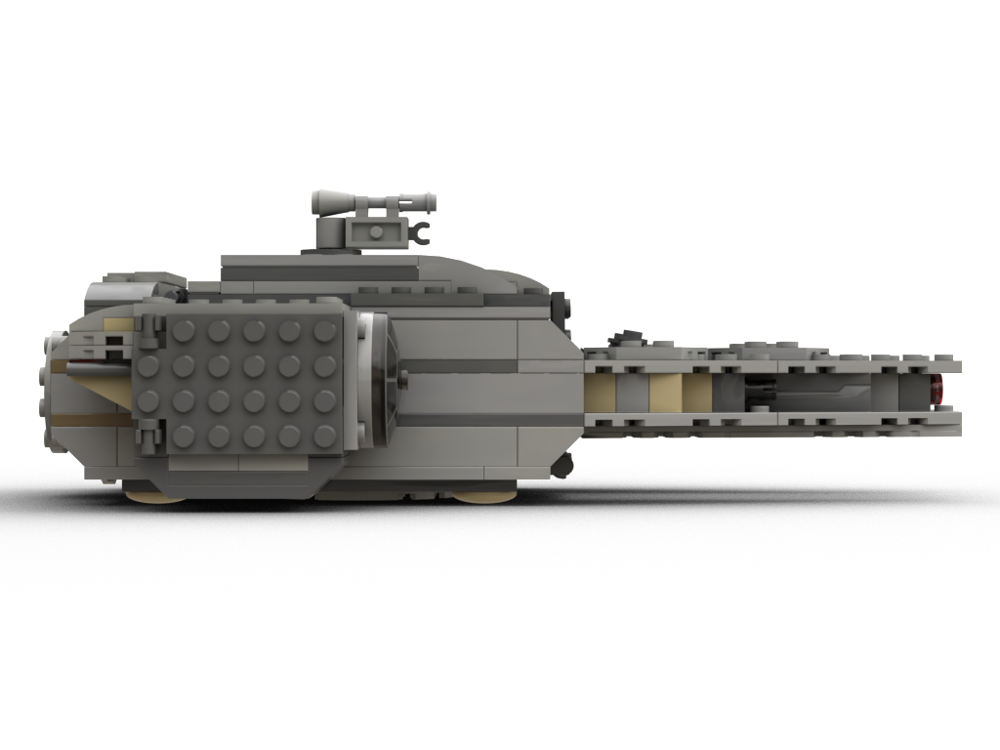
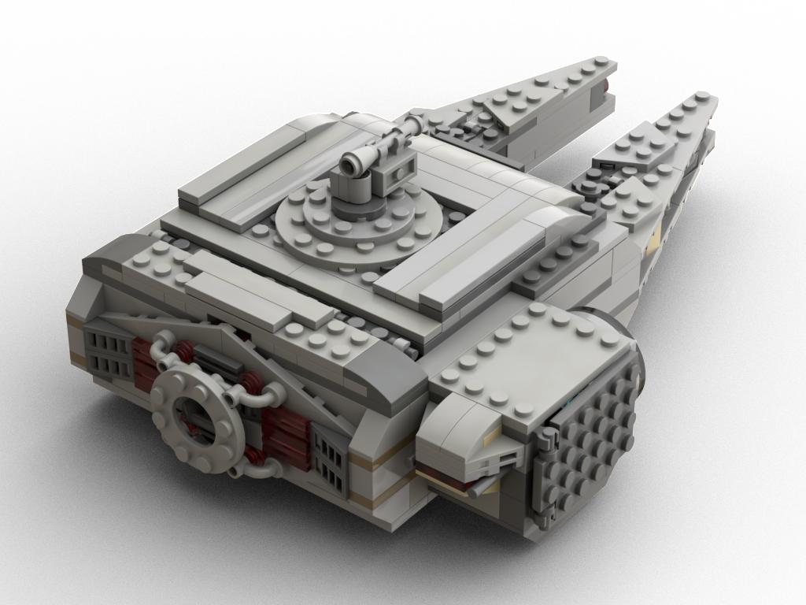
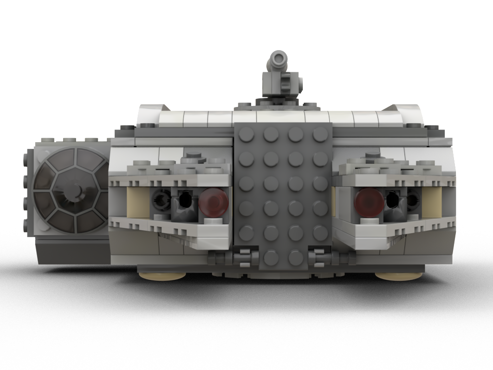
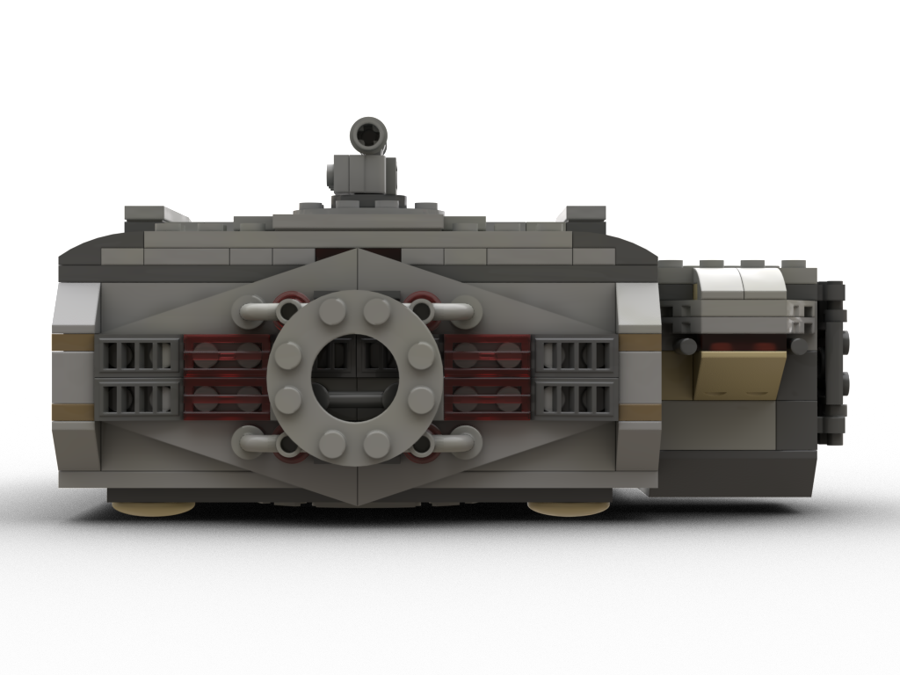
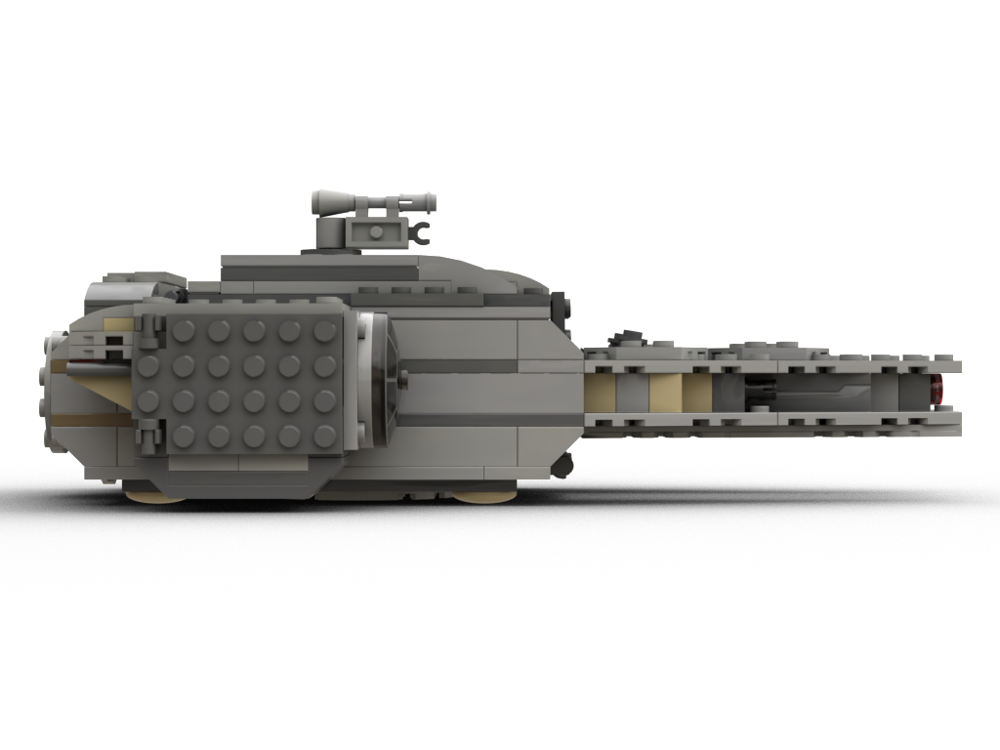
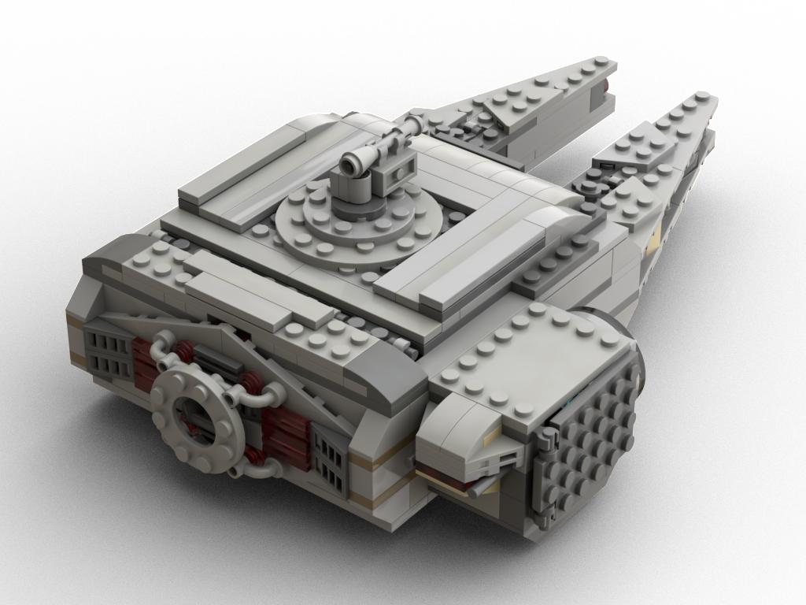
Made from various Lego Star Wars sets. Had to make lots of compromises, due to already having built the Mosquito, the Wedge, UniPod and the Needle at the same time. Originally the Needle served as the cockpit pod.
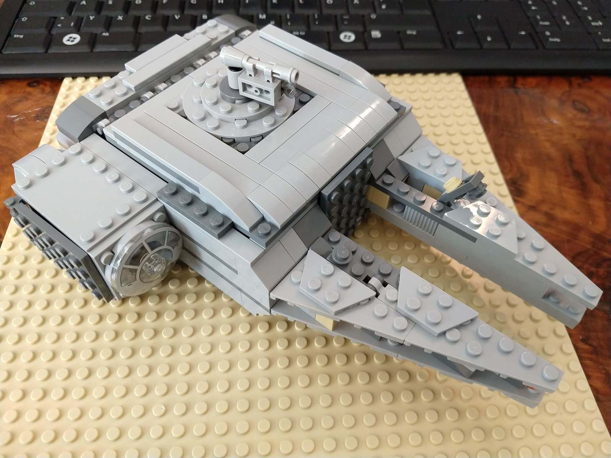 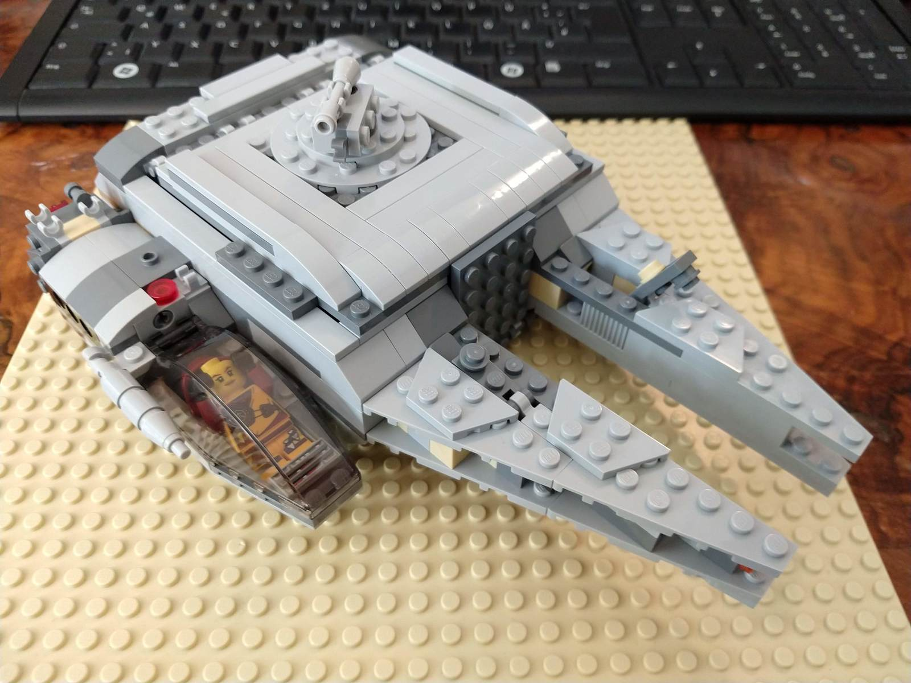 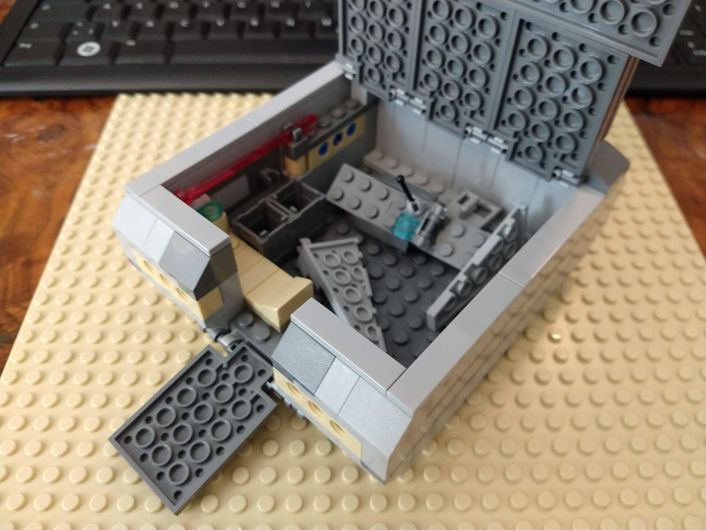 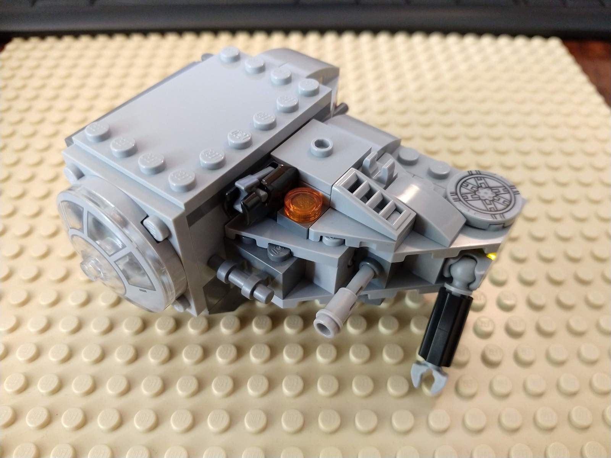